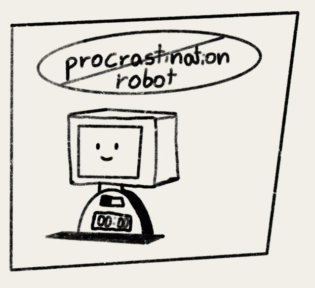

<div class="textcontainer">
<br></br>
<h3>Week 1: Final Project Proposal</h3>
<p class = "margin"></p>
Here are at most 3 ideas for my final project
<p class = "margin"></p>
<h4>Idea 1 : Procrastination Robot</h4>
<p class = "margin"></p>
This robot would help with avoiding procrastination and it would be useful whenever you want to focus. For the robot to start working you need to place your phone in the designated area and what the robot does is it senses the phone, and then you can set a timer for the amount of time you want to focus. During that time whenever you grab your phone and remove it from the robot's stand the robot starts to beep very loudly and it only stops once you put your phone back, after every removal an amount of time is added to the timer in order to force you to focus for longer.

<p class = "margin"></p>
<h4>Idea 2: Kitchen Duck</h4>
<p class = "margin"></p>
This duck is designed for anyone who enjoys cooking (or doesn't but has to cook) but often forgets to check the oven or stove, which can lead to burnt meals. It features a programmable timer that you can set for any duration you need. A few minutes before the timer goes off, it gives a warning sound, so you can get ready to check on whatever you're cooking. Once the timer is complete the duck starts beeping until you click stop. After that is done the duck will spin and play a song to celebrate your success, ensuring you don't end up with burnt food.
<img src="./kitchen duck.png" alt="kitchen duck" width="300">
<p class = "margin"></p>
<h4>Idea 3: record player</h4>
<p class = "margin"></p>
This record player works by placing a card close to it, which triggers it to start the designated song. The built-in LEDs light up in different colors depending on the song that's playing, creating a unique experience that matches the vibe of each different song. Essentially, this is a modern take on the classic vintage record player, incorporating technology to enhance the listening experience.
<br>
<img src="./record player.png" alt="record player" width="300">
</div>